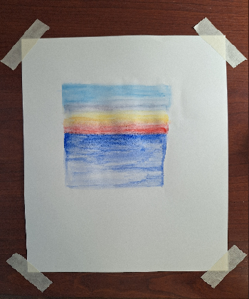
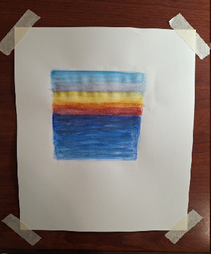
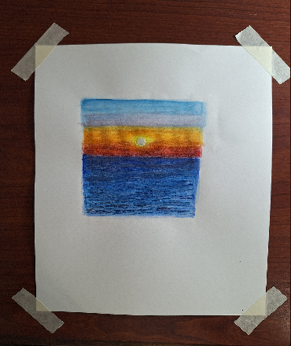
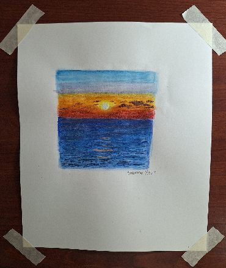

A Painting Demonstration
Reference Image

Step 1: In this example, I started off with adding a light layer of water to the paper. Then I added some colors that were similiar to my reference image.

Step 2: For this step, I had repeated the process done in step one, except I added more layers of paint. In addition, once I was done adding more layers of paint to the landscape, I had made sure to blend out each layer. For the water portion, I made sure to add a small wave-effect by sweeping the paint brush unevenly across the paper. It is important to note that the layers need enough time to dry between painting each layer because parts of the paper will start to shed if the layer hasn't dried off completely.

Step 3: For the third step, I decided to add more details to the painting. To add more details to the water, I used a smaller-sized brush to paint out thin stripes of different lengths across the body of the water with the bigger stripes being represented at the front of the water. As for the background, I had added more yellow rays to the sky and had added a white circle to represent the sun.

Step 4: In the last step, I added some highlights and smaller details to the overall painting. For the clouds, I mixed some red, blue, and a little bit of brown paint to achieve painting purple clouds. I also made sure the sunset was represented in the water surface. To achieve this outlook, I decided to incorporate some thin lines on top of the waves.